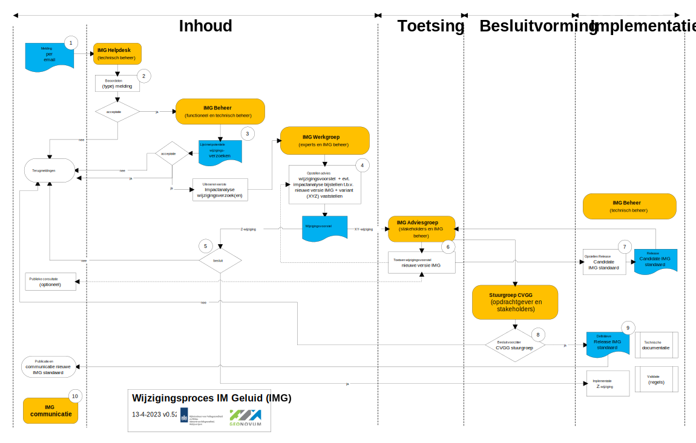

Gebruikers, die in de praktijk werken met het informatiemodel Geluid hebben vragen over de toepassing ervan, willen weten welke ontwikkelingen spelen, en hebben mogelijk suggesties voor aanpassingen van het informatiemodel Geluid. Aanpasssingen of wijzigingen in het informatiemodel Geluid worden niet zomaar doorgevoerd; voor de ene gebruiker van het informatiemodel zal de wijziging gering zijn, voor de ander kan het grote gevolgen hebben. Dit wijzigingsprotocol geeft inzicht in het wijzigingsproces, evenals de belangrijkste taken en verantwoordelijkheden van de betrokkenen (stakeholders) bij het onderhouden en gebruiken van het informatiemodel Geluid. De stakeholders worden op diverse momenten betrokken in dit proces.
Status van dit document
Dit is de definitieve versie van dit document. Wijzigingen naar aanleiding van consultaties zijn doorgevoerd.
1. Inleiding
Dit onderdeel is niet normatief.
Gebruikers, die in de praktijk werken met het informatiemodel Geluid hebben vragen over de toepassing ervan, willen weten welke ontwikkelingen spelen, en hebben mogelijk suggesties voor aanpassingen van het informatiemodel Geluid. Aanpasssingen of wijzigingen in het informatiemodel Geluid worden niet zomaar doorgevoerd; voor de ene gebruiker van het informatiemodel zal de wijziging gering zijn, voor de ander kan het grote gevolgen hebben. Dit wijzigingsprotocol geeft inzicht in het wijzigingsproces, evenals de belangrijkste taken en verantwoordelijkheden van de betrokkenen (stakeholders) bij het onderhouden en gebruiken van het informatiemodel Geluid. De stakeholders worden op diverse momenten betrokken in dit proces.
1.1 Waarom een wijzigingsprotocol
In dit wijzigingsprotocol staan de sturende principes achter het wijzigingsproces voor het informatiemodel Geluid; de manier waarop wijzigingen in het informatiemodel Geluid plaatsvinden in afstemming met de stakeholders en gebruikers. Met het protocol wordt elke wijziging van het informatiemodel een voorspelbaar en transparant proces voor bronhouders, beheerders, software leveranciers en gebruikers van het informatiemodel. In het protocol zijn basisbegrippen en uitgangspunten uiteengezet voor het wijzigingsproces, bijvoorbeeld wat onder nieuwe en volgende versies van de standaard verstaan wordt en wanneer deze nieuwe versie(s) verwacht mogen worden. Tevens is een processchema uitgewerkt, dat invulling geeft aan de stappen die de stakeholders met elkaar doorlopen om tot een wijziging van het informatiemodel Geluid te komen.
1.2 Begrippen
Begrip
Uitleg
Centrale Voorziening Geluidgegevens (CVGG)
Het Rijk, provincies, gemeenten en waterschappen moeten verplicht conform de Omgevingswet geluidgegevens aanleveren aan de Centrale Voorziening Geluidgegevens (CVGG). De CVGG is het digitale systeem dat de geluidgegevens verzamelt.
Informatiemodel Geluid (IMG)
Het Informatiemodel Geluid (IMG) beschrijft het informatiemodel voor de gegevensuitwisseling met de Centrale Voorziening Geluidgegevens en andere gebruikers.
Stuurgroep CVGG
De Stuurgroep Centrale Voorziening Geluidgegevens bestaat uit vertegenwoordigers van de verschillende gebruikersgroepen van de CVGG. Het ministerie van IenW, de opdrachtgever voor het beheer van de CVGG, zit de stuurgroep voor. De opdrachtgever stemt de koers van het beheer CVGG via de stuurgroep CVGG af. De voorzitter van de stuurgroep CVGG stelt tevens een nieuwe versie van de IMG standaard vast, nadat de adviesgroep een advies over een wijzigingsvoorstel in de stuurgroep CVGG heeft ingebracht.
Adviesgroep
De adviesgroep brengt advies uit aan de stuurgroep CVGG over een wijzigingsvoorstel. De adviesgroep bestaat uit vertegenwoordigers van de gebruikers, deskundigen, stakeholders en de beheerder van het informatiemodel.
Werkgroep
Een werkgroep bestaande uit deskundigen (en belangrijke stakeholders) en de beheerders van het informatiemodel Geluid. De (ad hoc) werkgroep stelt een wijzigingsvoorstel op, dat ter toetsing aan de Adviesgroep wordt voorgelegd.
Beheeroverleg
Het overleg tussen functioneel beheerder en technische beheerder van het informatiemodel Geluid.
Wijzigingsprotocol
Hiermee wordt het geheel van vastgelegde regels en afspraken voor het wijzigen van de standaard vastgelegd.
Wijzigingsproces
Het wijzigingsproces is de daadwerkelijke wijziging van het IMG op een bepaald moment. Het volledige wijzigingsproces doorloopt de fasen van het wijzigingsprotocol met een datum van inwerkingtreding van de nieuwe versie van het IMG.
Wijzigingsverzoek
Wijzigingsverzoeken zijn wensen voor aanpassing van de standaard. Een wijzigingsverzoek doorloopt het wijzigingsproces en kan leiden tot een Wijzigingsvoorstel.
Wijzigingsvoorstel
In het wijzigingsproces worden meerdere wijzigingsverzoeken meegenomen en gebundeld tot één wijzigingsvoorstel voor het wijzigen van de IMG standaard.
2. Gebruik van het wijzigingsprotocol
Het wijzigingsprotocol schrijft een vast stramien voor het wijzigen van de IMG standaard voor. Het protocol benoemt de fasen en de op te leveren resultaten. Belangrijk zijn de randvoorwaarden en uitgangspunten. De gebruikers, deskundigen (experts) en andere stakeholders van het informatiemodel Geluid worden bij het wijzigen van het informatiemodel Geluid nauw betrokken.
Het wijzigingsprotocol voor het Informatiemodel Geluid geeft:
Inzicht in het behandel- en besluitproces dat ten grondslag ligt aan het versiebeheer;
Inzicht in de wijzigingsverzoeken;
Inzicht in een voorgestelde wijziging van de standaard;
Stabiliteit aan de standaard;
Continuïteit aan de standaard;
Een eenduidige aanpak.
2.1 Releasebeleid
2.1.1 Nieuwe versie van de standaard
Een release van een standaard is een nieuwe uitgave van de standaard. De wijzigingen binnen een release wordt gedocumenteerd en vastgelegd in Bijlage A van het informatiemodel. De gebruiker kan zo nagaan op welke plaatsen de betreffende standaard gewijzigd is. De nieuwe release kenmerkt zich ten opzichte van de oude versie door een hoger versienummer. Bij de release is ieder product van de standaard voorzien van een nieuw versienummer conform Semantic Versioning (SemVer). Binnen SemVer heeft elk product zijn eigen versienummer conform de X.Y.Z schrijfwijze, bijvoorbeeld versie 2.1.0 (=X.Y.Z):
X-wijzigingen Alle wijzigingen die vragen om heraanlevering van gegevens (bestaande gegevens passen niet meer in het nieuwe XML schema) zijn X wijzigingen. De volgende wijzigingen zijn voorbeelden die vragen om een heraanlevering”.
Het verwijderen van een objecttype of attribuut;
Het toevoegen van een verplicht objecttype of attribuutsoort;
Het wijzigen van de definitie of toelichting van een objecttype of attribuutsoort, zodanig dat het impact heeft op de aan te leveren gegevens*
Frequentie: in overleg met de opdrachtgever.
Y-wijzigingen Dit zijn wijzigingen die geen heraanlevering van gegevens vragen. Bijvoorbeeld het toevoegen van optioneel objecttype of attribuut. Of bijvoorbeeld als een attribuut een nieuwe naam krijgt die automatisch afleidbaar is. Dan is geen heraanlevering nodig. Deze wijzigingen zijn backwards compatible. Frequentie: in overleg met de opdrachtgever.
Z-wijzigingen Dit zijn bugs/fouten of aanvullingen in een definitie of toelichting, die geen impact hebben op de aan te leveren gegevens. Deze wijzigingen zijn backwards compatible. Frequentie: zo spoedig mogelijk na constatering.
*Dit wordt vastgesteld door voorzitter van de stuurgroep CVGG.
De SemVer-methodiek schrijft backwards compatibility voor op het Y-niveau. Een nieuwe versie dwingt daarmee geen directe overstap af bij de gebruikers, tenzij anders (bijvoorbeeld wettelijk) bepaald. Na het uitbrengen van de nieuwe versie van een standaard wordt de ontwikkeling van de oude versie stop gezet.
Voor het onderhoud en de ondersteuning van een oude versie van een standaard gelden de volgende uitgangspunten:
Aan een oude versie worden geen nieuwe features toegevoegd, geen aanpassingen gedaan op X en Y niveau na het uitbrengen van een nieuwe versie. Verzoeken om aanpassing en wijziging voor nieuwe functionaliteit worden niet meer voor de oude standaard in behandeling genomen maar doorgegeven aan het ontwikkelteam. Correcties (Z-wijzigingen) worden wel uitgevoerd op de vorige versies zolang deze nog ondersteund worden.
Bij oplevering van een nieuwe versie wordt de voorgaande versie nog een van te voren vastgestelde periode ondersteund. De duur van de overgangsperiode wordt mede bepaald door de omvang van de wijzigingen (X, Y en Z wijzigingen op de vorige versies), de staat van ontwikkeling van de standaard, en of de standaard in voorlopig dan wel permanent beheer is.
De duur van de ondersteuningsperiode voor de diverse soorten versies moet nog worden vastgesteld. Tot aan inwerkingtreden van de Omgevingswet, waar de Informatiemodel Geluid ook onder valt, zal naar verwachting de ondersteuningsperiode van verschillende versies anders zijn, dan in de periode van permanent beheer zonder dat daarnaast nog grootschalige ontwikkeling van de standaard plaatsvindt.
In paragraaf releasebeleid zijn de X, Y en Z wijzigingen uitgelegd. Wijzigingen kennen drie procesvarianten: eén voor X wijzigingen, één voor Y wijzigingen en één voor Z wijzigingen.
De start van het proces is voor alle varianten hetzelfde. Op de website wordt een wijzigingsverzoek ingediend bij de IMG Helpdesk. De impact van deze wijziging wordt door het technisch beheer beoordeeld in samenwerking met het functioneel beheerd in een impactanalyse. Deze eerste impactanalyse beoordeelt tot welke SemVer categorie de wijziging hoort, welke betrokken partijen geraakt worden door de wijziging en wat de secundaire effecten van de wijziging zijn (bijvoorbeeld ontstaan extra validatieregels in het CVGG). Naast de impactanalyse wordt, indien mogelijk, een oplossing aangedragen voor het wijzigingsverzoek.
Proces voor X en Y wijzigingen
X en Y wijzigingen vergen volledige afstemming en het doorlopen van alle in paragraaf 2.4 beschreven fasen: Inhoud, Toetsing, Besluitvorming en Implementatie. Voor de inhoudelijke fase wordt een (ad hoc) werkgroep gestart met daarin deskundigen (experts) vanuit vertegenwoordiging van de stakeholders die door de wijziging worden geraakt volgens de impactanalyse. Het resultaat van de werkgroep is een wijzigingsvoostel dat in het overleg van de Adviesgroep wordt besproken. X wijzigingen worden altijd voorgelegd aan de stuurgroep CVGG. De voorzitter van de stuurgroep CVGG stelt een nieuwe versie van de informatiemodel Geluid standaard vast. Y wijzigingen worden alleen voorgelegd aan de stuurgroep als de adviesgroep hier aanleiding toe geeft. Y wijzigingen kunnen zonder betrokkenheid van de stuurgroep door de voorzitter van de CVGG stuurgroep worden vastgesteld. Indien nodig wordt met software leveranciers een convenant afgesloten of een bestaand convenant uitgebreid, waarin wordt afgesproken dat software leveranciers (onderdelen van) de standaard gaan ondersteunen.
Implementatie van X wijzigingen
De implementatiefase van X wijzigingen wijkt af van die van Y wijzigingen, de implementatie van X wijzigingen vraagt namelijk altijd om een heraanlevering van geluidgegevens door bronhouders.
Proces voor Z wijzigingen
In overleg met het functioneel beheer worden Z wijzigingen in de volgende release opgenomen. De inhoudelijke fase wordt door het technisch beheer van de standaard uitgevoerd. Besluitvorming vindt plaats in afstemming met de functioneel beheer. Implementatie vindt plaats door het publiceren van de wijziging op de website.
2.3 Betrokkenen
De volgende betrokkenen spelen een rol in het wijzigingsproces van het Informatiemodel Geluid:
Rol
Stakeholder
Opdrachtgever (eigenaar) van het CVGG en het informatiemodel Geluid
Ministerie van Infrastructuur en Waterstaat (IenW)
Functioneel beheer van het informatiemodel Geluid en beheer van het CVGG
Rijksinstituut voor Volksgezondheid en Milieu (RIVM)
Technisch beheer van het informatiemodel Geluid
Geonovum
Software leverancier levert de software voor bronhouders voor het verwerken van geluidsgegevens conform het informatiemodel Geluid
Software bedrijven
3. Wijzigingsproces
De aanleiding voor een wijzigingsproces is gebaseerd op meldingen over de wensen en gevonden fouten in het informatiemodel Geluid. Dit zijn de wijzigingsverzoeken. Deze verzoeken worden door de Helpdesk in behandeling genomen en in samenwerking met de gebruikers en deskundigen (experts) en andere stakeholders verwerkt tot een wijzigingsvoorstel. De beheerder neemt het initiatief om een wijzigingsproces te starten, de stappen in het proces zijn conform het wijzigingsprotocol.
3.1 Fasen in het wijzigingsproces
Het volledige wijzigingsproces doorloopt de fasen Inhoud, Toetsing, Besluitvorming en Implementatie, zoals weergegeven in Figuur 1.
In de fase inhoud wordt voor ieder wijzigingsverzoek bepaald of deze wordt opgenomen in de nieuwe versie van de standaard of niet. Dit wordt door de IMG helpdesk intern vastgelegd en is raadpleegbaar via de website. Voor ieder wijzigingsverzoek dat wordt meegenomen in de nieuwe versie van de standaard, wordt een impactanalyse uitgevoerd en oplossingen uitgewerkt. Deze eerste impactanalyse beoordeelt ook tot welke SemVer categorie de wijziging hoort, welke betrokken partijen geraakt worden door de wijziging en wat de secundaire effecten van de wijziging zijn (e.g. er ontstaan extra validatieregels in het CVGG).
Wanneer tijdens de eerste impactanalyse is vastgesteld dat het om een X of Y wijzigingverzoek gaat, wordt een IMG werkgroep ingepland met de deskundigen en stakeholders (indieners van het wijzigingsverzoek). Afhankelijk van de omvang van de wijziging ten opzichte van de voorgaande versie en afhankelijk van welke stakeholders geraakt worden door de wijziging, verandert de samenstelling van de IMG werkgroep. De werkgroep wordt vooraf geïnformeerd over het wijzigingsvoorstel en indien mogelijk wordt een eerste probleemschets en oplossing aangedragen voorafgaand aan de werkgroep door het technisch beheer. De resultaten van de werkgroep worden in een wijzigingsvoorstel voorgelegd aan de IMG adviesgroep.
Toetsing
De fase Toetsing vormt een brug tussen de inhoud en besluitvorming. In deze fase wordt voor een X of Y wijziging door de IMG adviesgroep het wijzigingsvoorstel getoetst en van een advies voorzien voor besluitvorming. Met deze consultatie vragen wij de gebruikers en stakeholders van de IMG standaard actief hun reactie te geven op het wijzigingsvoorstel. Het wijzigingsvoorstel inclusief de terugkoppeling uit een evt. publieke consultatie wordt verwerkt als Release Candidate van het Informatiemodel Geluid.
Besluitvorming
Bij Besluitvorming wordt besloten om de gewijzigde IMG standaard vast te stellen en te publiceren. Afhankelijk van het type wijzigingsvoorstel (X, Y of Z, zie paragraaf proces varianten), besluit de voorzitter van de stuurgroep CVGG voor X en Y wijzigingen en het beheeroverleg voor de Z wijzigingen.
Implementatie
Het in gebruik nemen van de nieuwe IMG standaard in de praktijk staat centraal in deze fase. Hiervoor levert het technisch beheer verschillende technische bestanden op. De technische bestanden zijn bijvoorbeeld testbestanden. Deze bestanden ondersteunen bij de implementatie van de standaard in de software. Beheerders van de CVGG nemen het nieuwe informatiemodel Geluid in gebruik. Het functioneel en technisch beheer ondersteunt de implementatie bovendien door de werking van het informatiemodel toe te lichten tijdens bijvoorbeeld bijeenkomsten of 'inloopspreekuren' voor de gebruikers en software leveranciers. Resultaat van deze fase is dat de gebruikers geluidsgegevens kunnen maken en uitwisselen conform de nieuwe IMG standaard. In Hoofdstuk 5 lichten we de implementatie verder toe.
3.2 Het wijzigingsproces in detail
De meldingen en wijzigingsverzoeken alsook (inter)nationale ontwikkelingen geven aanleiding tot de verdere ontwikkeling voor een standaard. Het wijzigingsproces dat dit wijzigingsvoorstel doorloopt bestaat uit tien stappen, die in onderstaande Figuur 2 in onderlinge samenhang zijn weergegeven. In deze figuur zijn processen, besluiten en de relevante actoren en actorgroepen en hun interacties opgenomen. Iedere processtap is vervolgens kort beschreven.
Figuur 2Processchema wijzigingsbeheer IM Geluid
Processtappen
De volgende processtappen worden doorlopen om te komen tot wijzigingen in de IMG standaard (zie figuur 2):
Met een ‘melding’ begint het wijzigingsproces. Doorgaans zal de gebruiker van het informatiemodel een eis of wens indienen, maar het kan ook het functioneel of technisch beheer zijn in sommige gevallen (bijv. wanneer een onderliggende standaard is bijgesteld). Er zijn meerdere ‘triggers’, die kunnen leiden tot het indienen van een wijzigingsverzoek. Eisen en wensen, die kunnen leiden tot wijzigingen in het informatiemodel Geluid kunnen ontstaan ten gevolge van de volgende triggers:
Aanpassing van business doelen van de opdrachtgever;
Nieuwe of aangepaste wetgeving;
Aanpassing van aspecten van (onderliggende) standaarden;
Gewijzigde gebruikerswensen;
Wijzigingen in technische voorzieningen;
Wijzigingen in systemen waar mee gekoppeld wordt;
Het herstellen van fouten/bugs;
Het voor zijn van het optreden van fouten (preventief).
De bovengenoemde aanleidingen kunnen leiden tot wijzigingsverzoeken in het informatiemodel Geluid, waarmee het wijzigingsproces in gang kan worden gezet. In het algemeen worden 4 typen meldingen onderscheiden:
Een vraag;
Een wijzigingsverzoek n.a.v. een verbetering of fout/bug;
Een incident;
Een klacht.
De melding wordt per mail gestuurd aan de IMG Helpdesk. Bij het aanmelden van meerdere wijzigingsverzoeken, geldt dat voor elk wijzigingsverzoek een aparte mail gestuurd moet worden.
De IMG helpdesk registreert het wijzigingsverzoek in het meldingen systeem. De helpdesk (technisch beheer) beoordeelt het wijzigingsverzoek. De helpdesk is de actiehouder van de melding en controleert of de melding volledig en helder is. Bij een fout onderzoekt de helpdesk of dit inderdaad het geval is. Ook kan de helpdesk verder informatie opvragen bij de indiener van de melding. Ook wordt gecontroleerd of de melding geen duplicaat van een reeds ingevoerde melding. Indien de melding helder is beschreven, en het betreft een wens voor het aanpassen van de standaard of een gevonden fout, dan kan melding worden erkend en wordt de melding formeel opgenomen in het meldingen systeem (Jira). Indien de melding de niet erkend wordt, zal de helpdesk via de mail contact opnemen met de indiener om de melding verder af te stemmen.
De binnengekomen meldingen wordt besproken in het IMG beheeroverleg, het overleg tussen functioneel en technisch beheer van het IMG. Het IMG beheeroverleg stelt op basis van de binnengekomen heldpdesk meldingen een lijst op met potentiële wijzigingsverzoeken. De lijst met wijzigingsverzoeken wordt pas gemaakt als overeengekomen wordt, dat de binnen gekomen wijzigingsverzoeken naar een nieuwe release van de IMG standaard kan leiden. Tot dan is er alleen de registratie in het meldingen systeem (Jira) en op Github. Tevens wordt in deze stap door het beheer een eerste impactanalyse uitgevoerd voor de wijzigingsverzoeken. Dit werk voert het technisch beheer van IMG uit in samenwerking met het functioneel beheer van het IMG. De impactanalyse betreft de impact van de wijziging van de standaard op de gebruikers en de door hen gebruikte software, waaronder ook de CVGG. De resultaten van de impactanalyse worden gecommuniceerd op Github.
Indien een melding wordt afgewezen – dus niet in de lijst met wijzigingsverzoeken wordt opgenomen – wordt door de IMG helpdesk een bericht met de verklaring van de afwijzing van de melding aan de indiener gestuurd.
Indien het functioneel beheer het nodig acht om te komen tot een wijzigingsvoorstel voor de IMG standaard, wordt een IMG werkgroep in het leven geroepen bestaande uit m.n. deskundigen (experts) en belangrijke stakeholders en het beheer. Zij stellen een definitieve impactanalyse op voor de ingediende wijzigingsverzoeken in nauwe samenwerking en afstemming met de stakeholders en bepalen wat voor soort wijziging (X, Y of Z) aan de orde is (zie ook onderstaande noot). De uitnodiging voor de IMG werkgroep wordt gedeeld met alle leden van de IMG adviesgroep. De IMG werkgroep levert een wijzigingsvoorstel voor een nieuwe versie van de IMG standaard op voor de IMG adviesgroep in geval van een X of Y-wijziging. Dit is doorgaans ook het moment dat de registratie van de wijzigingsverzoeken ook breder gedeeld wordt en worden op de 'Wensen en Eisen LijsT' (WELT genaamd). Voordat een wijzigingsvoorstel naar de IMG adviesgroep gaat, wordt de 'Wensen en Eisen LijsT' bijgewerkt op basis van de laatste inzichten vanuit de besprekingen met de IMG werkgroep. Publicatie van de wijzigingsverzoeken (uitgewerkt naar Aanleiding, Voorgestelde wijziging, Impact) op de WELT website is toegankelijker en minder technisch van aard dan publicatie van de wijzigingsverzoeken op Github dat door de deskundigen en het beheer wordt ingezet in de IMG werkgroep.
Noot
Indien het wijzigingsvoorstel enkel Z-wijziging(en) betreft, neemt het IMG beheeroverleg een besluit en gaat (al dan niet) over tot implementatie van de Z-wijziging.
De IMG adviesgroep toetst het wijzigingsvoorstel. In de IMG adviesgroep hebben gebruikers, belangrijke stakeholders en het beheer zitting. Indien nodig geacht door de IMG adviesgroep, wordt het wijzigingsvoorstel één maand ter publieke consultatie aangeboden op de website. Dit is optioneel. De resultaten van de optionele publieke consultatie worden daarna getoetst door de IMG adviesgroep. Indien de IMG adviesgroep over het wijzigingsvoorstel positief adviseert, wordt het wijzigingsvoorstel aan IMG technisch beheer gestuurd om een Release Candidate van de IMG standaard op te stellen. In geval de IMG adviesgroep het voorstel nog niet kan accorderen en eerst wijzigingen wil doorvoeren en het wijzigingsvoorstel wil laten bijstellen dan wel de impactanalyse wil bijstellen, dan gaat het voorstel terug naar de IMG Werkgroep. De IMG werkgroep stelt vervolgens het wijzigingsvoorstel bij en brengt het wijzigingsvoorstel opnieuw in bij de IMG adviesgroep.
Evt. na de publieke consultatie zorgt het IMG technisch beheer, dat de resultaten van de consultatie worden verwerkt in een Release Candidate. De Release Candidate wordt daarna ingebracht bij de IMG adviesgroep voor toetsing van de Release Candidate van IMG. Na toetsing wordt de Release Candidate van IMG met een advies gestuurd aan Stuurgroep CVGG voor een besluit.
De voorzitter van de stuurgroep CVGG neemt een besluit over de implementatie van de Definitieve Release van IMG. Indien de voorzitter van de stuurgroep CVGG akkoord is, wordt de implementatie ondersteuning in gang gezet. Indien het besluit tot implementatie negatief is, wordt terugmelding gemaakt aan de gebruikers en stakeholders en op de website.
De implementatie ondersteuning wordt uitgevoerd door het IMG technisch beheer, waarbij de technische documentatie en (validatie)regels worden bijgesteld en gepubliceerd.
Na afronding van de implementatie ondersteuning, vindt communicatie plaats over de nieuwe IMG standaard.
4. Tussentijdse werkafspraken
Het toepassen van het informatiemodel Geluid roept soms vragen op. Bij onduidelijkheden, discrepanties of fouten in de standaard kunnen in de praktijk vragen ontstaan over hoe de standaard – in afwachting van een formele wijziging– toe te passen. Met name bij een X wijziging van de standaard, die een grote impact op toepassing in de praktijk heeft, zullen geconstateerde fouten of gewenste wijzigingen in de regel niet heel snel worden doorgevoerd. Een tussentijds gebruiksadvies wordt dan opgesteld in de vorm van een tussentijdse werkafspraak. In dit hoofdstuk wordt het maken van werkafspraken toegelicht.
Als er een fout of probleem wordt geconstateerd, gaat er doorgaans altijd enige tijd overheen de fout of het probleem wordt hersteld in de nieuwe IMG standaard. Typische voorbeelden van dit soort fouten of problemen zijn in algemene zin:
In de IMG standaard zijn bepaalde technische vrijheden mogelijk die op grond van een goede praktijk niet zouden moeten worden benut;
In de IMG standaard is iets wel mogelijk, maar niet verplicht, terwijl dit wel sterk gewenst is.
In dit soort gevallen zal het beheer na consultatie een werkafspraak publiceren over hoe in afwachting van de wijziging (een reparatie) van de IMG standaard moet worden omgegaan met een geconstateerde fout of probleem. Zo’n werkafspraak heeft de formele status van een advies van het beheer aan de gebruikers van het IMG. De tussentijdse werkafspraak vervangt niet de in gebruik zijnde versie van IMG (de vastgestelde versie), maar geldt wel als werkwijze in afwachting van de nieuwe IMG standaard (na reparatie).
Voor bovengenoemde voorbeelden zouden de werkafspraken resp. als volgt kunnen zijn:
Gebruik nooit de mogelijkheid A die de standaarden bieden;
Doe het altijd op manier B.
De status van deze werkafspraken is als volgt:
De tussentijdse werkafspraken zijn van toepassing totdat de wijzigingen in werking zijn getreden, daarna zijn ze niet meer van toepassing;
Indien mogelijk zijn de werkafspraken altijd een directe voorloper van de wijzigingen, zelf die zullen worden doorgevoerd;
Binnen het wijzigingsbeheer worden alleen werkafspraken gemaakt, die vooruitlopen op daadwerkelijk aanstaande wijzigingen. Er worden binnen dit kader geen permanente werkafspraken gemaakt die niet verankerd zullen worden in het IMG;
Het toepassen van de werkafspraken is (van rechtswege) niet verplicht, maar geeft duidelijkheid en richting bij implementatie door software leveranciers;
Het toepassen van de werkafspraken vergemakkelijkt de implementatie van wijzigingen, omdat het een al een voorbereidende werkwijze is voor het ander;
Gegevens, die niet voldoen aan de werkafspraken, zullen niet worden afgekeurd door de validator van het CVGG. Eventueel kan wel een waarschuwing of andersoortige melding worden gegeven over de geconstateerde afwijking van de werkafspraak.
5. Implementatie ondersteuning
Het in gebruik nemen van (een nieuwe versie van) een IMG standaard staat centraal in deze fase. Tijdens de implementatie ondersteuning worden desgewenst verschillende activiteiten uitgevoerd worden:
Het opleveren van technische bestanden;
Het opleveren van de validatieregels;
Het verzorgen van een opleiding;
De communicatie.
Tevens wordt de implementatie ondersteund door de IMG helpdesk.
5.1 Technische bestanden
Om software leveranciers en gebruikers te ondersteunen bij de implementatie van een nieuwe versie van de IMG standaard, worden door het technisch beheer verschillende bestanden en documentatie opgeleverd:
Implementatiebestanden;
Voorbeeldbestanden;
Voorbeeldberichten.
Ook schema’s zijn voorbeelden van implementatiebestanden die als onderdeel van standaarden worden opgeleverd. Het kan hier ook gaan om implementatiebestanden voor visualisatieregels en iconen.
Voorbeeldbestanden en voorbeeldberichten kunnen worden gebruikt voor het testen van applicaties.
5.2 Validatie
Na het opleveren van de nieuwe standaard inclusief de verschillende onderdelen, richt de implementatie ondersteuning van de IMG standaard zich specifiek op software leveranciers en het beheer van de CVGG. Bij deze groep gebruikers is de ondersteuning vooral technisch van aard. De validator van de CVGG is het hulpmiddel bij uitstek. Van het IMG is wel een schema beschikbaar voor validatie. Voor de implementatie van de regels is vooralsnog geen schematron validator beschikbaar. De regels beschreven in het IMG worden door de CVGG en software leveranciers geïmplementeerd.
5.3 Opleiding en advies
Opleiding en advies kunnen van toegevoegde waarde zijn voor implementatie ondersteuning van de gebruikers van de IMG standaard. Middelen als documentatie, bijeenkomsten en workshops worden ingezet om de kennis over de wijzigingen in nieuwe IMG standaard te delen en te ondersteunen bij de implementatie van de nieuwe versie van de standaard. Ook publicaties in vakbladen kunnen worden ingezet ter ondersteuning.
5.4 Communicatie
Het hele wijzigingsproces staat of valt met een goede communicatie. Onder goede communicatie wordt verstaan het tijdig leveren van de juiste informatie aan de juiste belanghebbenden. Dit betreft de proceskant alsook de producten die er worden opgeleverd.
Wijzigingen in het informatiemodel Geluid worden bekendgemaakt op de website.
CVGG Nieuwsbrief
Wijzigingen in het informatiemodel Geluid worden bekendgemaakt in de nieuwsbrief van de CVGG.
Publieke consultatie
Bij X en Y-wijzigingen wordt in sommige gevallen een publieke consultatie in het wijzigingsproces gehouden. De wijzigingen in het informatiemodel wordt dan voor een bepaalde, afgesproken periode voor gelegd ter commentaar aan alle belanghebbenden en geintersseerden door middel van een publieke consultatie via de website en de nieuwsbrief van de CVGG.
Werkafspraken
De tussentijdse werkafspraken die bepalen hoe er in de tussentijd moet worden omgegaan met geconstateerde fouten en problemen (zie Hoofdstuk 4) worden gepubliceerd via nieuwsberichten op de website en door middel van nieuwsbrief van de CVGG.
6. Escalatieprocedure en klachtenafhandeling
In voorgaande hoofdstukken gaat het protocol ervan uit dat wijzigingen 'in vrijheid' worden doorgevoerd. In het beheerproces wordt geen rekening gehouden met noodzakelijke wijzigingen, die met spoed of onder druk van bijvoorbeeld (externe) nieuwe wet- en regelgeving moeten worden doorgevoerd. Hiervoor bestaat een escalatieprocedure.
Daarnaast kunnen ook klachten ingediend worden over het beheerproces en zijn afspraken gemaakt over de klachtenafhandeling.
6.1 Escalatieprocedure
Er is sprake van een escalatieprocedure als er een wijziging noodzakelijk is die niet in het reguliere wijzigingsproces doorgevoerd kan worden, omdat dit naar verwachting en inschatting te lang duurt. Een uitputtende lijst met situaties en criteria wanneer escalatie van toepassing is, valt op voorhand niet te geven. Maar voor de beeldvorming: het gaat om situaties waarbij het niet doorvoeren van een bepaalde noodzakelijke wijziging leidt tot onaanvaardbare risico's voor het werkveld of het onmogelijk uitvoeren (vanwege bijvoorbeeld tegenstrijdige wetten) van werkzaamheden.
De escalatieprocedure wordt niet gebruikt om reguliere wijzigingen sneller door te kunnen voeren. Er is geen vastgelegd proces om de escalatieprocedure te doorlopen, omdat verschillende situaties van escalatie wellicht tot een verschillende wijze van handelen moeten leiden. In plaats daarvan zijn onderstaande sturende principes leidend om verantwoordelijkheden te duiden.
Signalering
Uit het werkveld kunnen signalen ontstaan dat met spoed een wijziging doorgevoerd zou moeten worden. Het is vooraf niet aan te geven uit welke kanalen deze geluiden zullen ontstaan. Het is wel van belang om in het beheer de rol te onderkennen om signalen op te vangen uit het werkveld (antennefunctie). In ieder geval zullen deze signalen op enig moment de opdrachtgever of beheer bereiken, en op dat moment zal er overleg gevoerd worden over deze signalen.
Overleg
Bij escalatie wordt in principe overleg gevoerd tussen het functioneel en operationeel beheer en de opdrachtgever. De partijen raadplegen de betrokkenen in het werkveld daar waar nodig.
Besluitvorming
De beoordeling of de escalatieprocedure van toepassing is, wordt genomen door de opdrachtgever. Ook het besluit welke wijzigingen doorgevoerd moeten worden tijdens een escalatie en op welke manier, wordt genomen door de opdrachtgever.
Coördinatie
De coördinatie tijdens de escalatieprocedure wordt uitgevoerd door de opdrachtgever.
Communicatie met het werkveld
De communicatie met het werkveld tijden een escalatie wordt uitgevoerd door het (functioneel en technisch) beheer.
6.2 Klachtenafhandeling
Het garanderen van het serieus nemen van klachten kan alleen door deze volgens een zorgvuldige procedure te behandelen. Klachten kunnen ook beschouwd worden als verbetersuggestie. Twee verschillende typen klachten met betrekking tot de IMG standaard worden onderscheiden:
Klachten over de toepassingsmogelijkheid van de standaard;
Klachten over het beheer van de standaard.
In het eerste geval is het feitelijk geen klacht maar een wens of eis tot het aanpassen van de standaard. Het beheer van de betreffende standaard neemt de klacht in behandeling en neemt de klacht op als wijzigingsverzoek en niet als klacht.
In het tweede geval is er sprake van ontevredenheid over de uitvoering van het beheerproces van de IMG standaard en betreft de klacht niet de inhoud, de standaard zelf. De indiener is van mening dat het beheerteam van de IMG standaard, dan wel een beheerder het werk niet naar behoren uitvoert. In dat geval wordt de klacht doorgezet naar de opdrachtgever.
Het indienen van klachten loopt in principe via de IMG Helpdesk. De helpdesk zet de klacht daarop door aan de opdrachtgever.